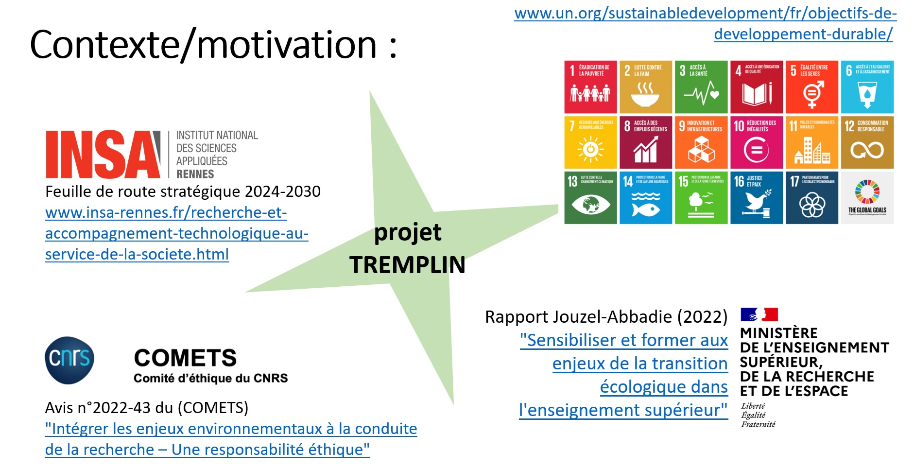

Je suis Professeure des Universités à l’INSA Rennes, membre de l’IUF et responsable de l’équipe SurfWAVE à l’IETR. Je travaille sur les antennes et systèmes électromagnétiques pour le spatial et l’observation de la Terre, avec des partenaires académiques, industriels, le CNES et l’ESA.
IUF · Responsable SurfWAVE · Collaborations ESA/CNES · Brevets avec des partenaires industriels · Prix Valorisation 2025 · TREMPLIN / IRIS-E
I am a Full Professor at INSA Rennes, an IUF member and Head of the SurfWAVE research team at IETR. I work on antennas and electromagnetic systems for space and Earth observation, with academic and industrial partners, CNES and ESA.
IUF · Head of SurfWAVE · ESA/CNES collaborations · Patents with industrial partners · 2025 Innovation Valorization Award · TREMPLIN / IRIS-E
Activités à venir
Upcoming Activities
🔭 1er octobre 2026 — « Pouvons-nous partager le ciel ? », Village des Sciences de l’INSA Rennes · 11h–11h30, Amphi M'Hamed Drissi · élèves de Premières et Terminales du lycée Bréquigny
🔭 1 October 2026 — “Can We Share the Sky?”, INSA Rennes Science Village · 11:00–11:30, Amphi M'Hamed Drissi · Première and Terminale students from Lycée Bréquigny
✨ European Women in STEM Award — Nominée
✨ European Women in STEM Award — Nominated
European Microwave Week 2026 — Conférencière invitée dans l’atelier « Current Trends in MMW and THz Components ».
European Microwave Week 2026 — Invited Lecturer at the workshop “Current Trends in MMW and THz Components”.
ESA Antenna Workshop at ESTEC — Présidente de session « New Technologies for Active Antennas » (avec Esteban Menargues, SWISSto12).
ESA Antenna Workshop at ESTEC — Organizer and chair of session “New Technologies for Active Antennas” (together with Esteban Menargues, SWISSto12).
Actualités sélectionnées
Selected News
2026
EPFL — Séminaire scientifique invité, “From Research to Space: Experiences Connecting Academia and Industry in Europe”, consacré aux expériences de collaboration entre recherche académique et industrie dans le domaine spatial.
EPFL — Invited scientific seminar, “From Research to Space: Experiences Connecting Academia and Industry in Europe”, sharing experiences of collaboration between academia and industry in the space sector.
Researchers at Kindergarten — Six ateliers de divulgation scientifique dans des écoles maternelles, autour de la lumière et des champs électriques et magnétiques, auprès d’enfants de 4 à 6 ans.
Researchers at Kindergarten — Six science outreach workshops in kindergartens, introducing children aged 4–6 to light and electric and magnetic fields.
Article Water Radar — Publication dans IEEE Access de travaux sur un réseau d’antennes à ondes de fuite à double polarisation pour l’instrument radar aéroporté HOMARDS, développé avec le CNES, l’IFREMER et l’ONERA, dans le cadre de la télédétection de l’eau et de la mission ODYSEA.
Water Radar paper — Publication in IEEE Access of work on a dual-polarized leaky-wave antenna array for the airborne HOMARDS radar instrument, developed with CNES, IFREMER and ONERA, for water remote sensing and the ODYSEA mission.
NewSpace — Article de vulgarisation dans INTERFACE INSA Alumni, présentant les enjeux du NewSpace et nos activités de recherche dans le domaine des antennes et des applications spatiales.
NewSpace — Outreach article in INTERFACE INSA Alumni, presenting the challenges of NewSpace and iyr research activities in antennas and space applications.
2025
✨ Trophées Valorisation 2025 — Lauréate du prix Numérique – électronique, photonique, IA et cyber, pour les travaux sur des antennes intelligentes, modulables et reprogrammables à distance.
✨ 2025 Innovation Valorization Awards — Recipient of the Digital – Electronics, Photonics, AI and Cybersecurity Award, for research on smart, modular and remotely reconfigurable antennas.
♀️ The Place I Want to Be — Invitée par l’éditrice de la rubrique Women in Engineering de IEEE Antennas and Propagation Magazine, j’ai eu le plaisir d’écrire cette réflexion personnelle sur le métier de chercheuse, les rencontres qui nous façonnent et les valeurs qui donnent du sens à notre parcours.
♀️ The Place I Want to Be — Invited by the editor of the Women in Engineering column of IEEE Antennas and Propagation Magazine, I had the pleasure of writing this personal reflection on being a researcher, the people who shape our journey, and the values that give meaning to our work.
📡 Dual-Polarized Spaceborne Phased Arrays — Réseaux d’antennes phasées à haute efficacité développés en collaboration avec l’ESA, pour des applications spatiales en orbite basse.
📡 Dual-Polarized Spaceborne Phased Arrays — Highly efficient phased arrays developed in collaboration with ESA, for low Earth orbit space applications.
Pour moi, la recherche, l'enseignement et le dialogue avec la société sont indissociables. La recherche nourrit mon enseignement, l'enseignement nourrit ma recherche, et tous deux trouvent leur prolongement dans des actions destinées à partager les connaissances au-delà du monde académique.
To me, research, teaching, and engagement with society are inseparable. Research enriches my teaching, teaching enriches my research, and both extend beyond academia through activities that share knowledge with society.
Innovation pédagogique · TREMPLIN Educational innovation · TREMPLIN
TREMPLIN est un projet d’innovation pédagogique financé par IRIS-E que je porte avec Rozenn Texier Picard (professeure de Mathématiques Appliquées à l'ENS Rennes) et Clément Mabi (directeur du laboratoire de sociologie LFPC) comme co-porteurs, et Lise Trégloze, chercheuse en sciences de l’éducation, recrutée dans le projet comme ingénieure pédagogique. C’est un projet transformateur et multidisciplinaire qui me tient à cœur. Il souhaite créer une communauté d’enseignants-chercheurs, d’étudiants et d’associations locales, pour expérimenter dans un espace sécurisé, avec l’objectif de transformer les pratiques en école d’ingénieurs afin d’intégrer la transition socio-environnementale.
TREMPLIN is a pedagogical innovation project funded by IRIS-E, which I lead with Rozenn Texier Picard (Professor of Applied Mathematics at ENS Rennes) and Clément Mabi (Director of the LFPC Sociology Laboratory) as co-leaders, and Lise Trégloze, a researcher in education sciences, recruited for the project as a pedagogical engineer. It is a transformative and multidisciplinary project that matters deeply to me. It aims to create a community of teacher-researchers, students, and local associations, to experiment in a safe space, with the goal of transforming practices in engineering schools to integrate the socio-environmental transition.
Higher Education Summit 2026 : Nous avons présenté le premiers résultats dans un forum international.
Higher Education Summit 2026 : We presented our first results in an international forum.




☕ Researchers & Roosters
Un cycle de rencontres et de séminaires pour faire vivre les échanges au sein du collectif de recherche.
A series of meetings and seminars bringing the research community together.


📸 Interventions en milieu scolaire 📸 School Interventions
Des interventions et ateliers pour faire découvrir les sciences aux plus jeunes.
Activities and workshops introducing science to young children.
Scientist at Kindergarten
03/07/2026 · Oscar Leroux
.png)
 - English.png)
.png)
 - English.png)
.png)
.png)
.png)
.png)
.png)
.png)
.jpg)
.jpg)
.jpg)
.jpg)
Nos différentes fiches pédagogiques
Our Educational Resources
Lasers & Ballons Lasers & Balloons
Optronique & Thermodynamique : Absorption thermique vs réflexion lumineuse.
Optronics & Thermodynamics: Thermal absorption vs reflection.
Prisme & Ombres Colorées Prism & Colored Shadows
Optique Géométrique : Décomposition spectrale par prisme K9 et synthèse RVB.
Geometric Optics: Light dispersion via a K9 prism and RGB color mixing.
Le Train Magnétique The Magnetic Train
Électromagnétisme : Moteur homopolaire et Force de Laplace.
Electromagnetism: Homopolar motor utilizing Laplace force.
Force Électrostatique Electrostatic Force
Triboélectricité : Arrachement d'électrons et lévitation électrostatique.
Triboelectricity: Electron transfer causing electrostatic levitation.
Téléphone à Lumière Light Telephone
Optoélectronique : Modulation audio d'une LED haute vitesse (Li-Fi).
Optoelectronics: Audio modulation of a high-speed LED (Li-Fi).
Filtres & Polarisation Filters & Polarization
Biréfringence & Photoélasticité : Extinction par filtres croisés à 90°.
Birefringence & Photoelasticity: Light extinction via 90° crossed polarizers.
⚙️ Manuels d'installation
⚙️ Setup Manuals
Guides pas à pas pour les démonstrateurs et l'alignement des équipements.
Step-by-step guides for technical setup and equipment alignment.
🧸 Fiches pédagogiques — écoles maternelles
🧸 Educational Cards — Kindergarten
Explications vulgarisées, schémas simples et visuels adaptés au très jeune public.
Simplified explanations and visual diagrams tailored for young children.
Groupe SurfWAVE SurfWAVE Team
En tant que responsable de l'équipe de recherche SurfWAVE, je suis chargée d'animer une équipe au sein de l'IETR à l'INSA Rennes, en accompagnant les chercheurs, enseignants-chercheurs, ingénieurs et doctorants qui contribuent à nos activités de recherche et de formation. L'équipe travaille autour des ondes électromagnétiques, des surfaces périodiques et quasi-périodiques, ainsi que de la conception et du contrôle de dispositifs pour des applications spatiales, radar et télécommunications.
As head of the SurfWAVE research team, I lead a research group within IETR at INSA Rennes, bringing together researchers, academics, research engineers and PhD students involved in our research and educational activities. The team works on electromagnetic waves, periodic and quasi-periodic surfaces, and the design and control of devices for space, radar and telecommunications applications.


Lise Trégloze
Ingénieure pédagogique · Chercheuse CREAD associée Associate Researcher · PhD student at CREADAnciens membres
Former members
Communauté scientifique Scientific community
Comités et responsabilités scientifiques : membre du comité scientifique de l’IETR depuis 2020 ; membre de comités de programme de conférences internationales (EuMW, IMS, ESA Antenna Workshop, EuCAP) ; co-responsable du groupe EurAAP Women in Antennas and Propagation (2020–2024) ; membre du comité Educational Activities de l’IEEE Antennas and Propagation Society (2015–2026).
Scientific committees and responsibilities: member of the IETR Scientific Committee since 2020; member of technical program committees for international conferences (EuMW, IMS, ESA Antenna Workshop, EuCAP); co-chair of the EurAAP Women in Antennas and Propagation working group (2020–2024); member of the IEEE Antennas and Propagation Society Educational Activities Committee (2015–2026).
Évaluation et jurys : membre de comité d’évaluation ANR (2023–2025) ; participation à 6 comités de recrutement de maîtres de conférences, dont une présidence à l’INSA Rennes ; membre de 11 jurys de thèse.
Evaluation and committees: member of a national ANR research evaluation committee (2023–2025); participation in 6 Associate Professor recruitment committees, including one presidency at INSA Rennes; member of 11 PhD examination committees.
Recherche Research
Mes recherches portent sur le contrôle des ondes électromagnétiques et la conception d’antennes et de systèmes RF, avec un intérêt particulier pour les applications spatiales, le radar et l’observation de la Terre. Je cherche à concevoir des dispositifs multifonctionnels, capables d’harmoniser différentes applications au sein d’un même système et de s’adapter au cours du temps à l’évolution des besoins sociétaux. Je m’intéresse ainsi à une conception plus responsable des dispositifs et de leurs ressources, en m’appuyant sur de nouveaux concepts de la physique des ondes et des métamatériaux, ainsi que sur de nouvelles techniques de fabrication qui peuvent aussi contribuer à démocratiser l’utilisation de ces technologies.
My research focuses on electromagnetic wave control and the design of antennas and RF systems, with a particular interest in space, radar and Earth observation applications. I aim to design multifunctional devices that can bring different applications together within a single system and adapt over time to changing societal needs. I therefore explore more responsible approaches to the design and use of resources, drawing on new concepts in wave physics and metamaterials, as well as new manufacturing techniques that can also help democratize the use of these technologies.
Une partie de ces travaux est menée avec des partenaires industriels et a donné lieu à plusieurs brevets, notamment autour d’antennes intelligentes, modulables et reprogrammables.
Part of this work is carried out with industrial partners and has led to several patents, including work on smart, reconfigurable and remotely programmable antennas.
Contrôle intelligente des ondes Intelligent wave control
Je développe des surfaces capables de contrôler les ondes électromagnétiques et d’apporter de nouvelles fonctionnalités aux antennes et systèmes RF : contrôle du faisceau, de la polarisation, du filtrage fréquentiel ou encore amélioration des performances de rayonnement. Ces travaux s’appuient sur la physique des structures périodiques et quasi-périodiques et sur les concepts de métamatériaux, avec l’objectif de concevoir des dispositifs multifonctionnels et adaptables. Ces travaux sont menés en collaboration avec Thales Alenia Space, le CNES, l’Universidad de Granada et l’Universidad de Sevilla.
I develop surfaces that can control electromagnetic waves and bring new functionalities to antennas and RF systems, including beam control, polarization manipulation, frequency filtering and improved radiation performance. These studies build on the physics of periodic and quasi-periodic structures and on metamaterial concepts, with the aim of designing multifunctional and adaptable devices. This concepts are developed in collaboration with Thales Alenia Space, CNES, Universidad de Granada and Universidad de Sevilla.
Travaux sélectionnés
Selected work
2026 — Wideband Mechanically Tunable Full-Metal 1-Bit Reconfigurable Intelligent Surface in Ku-Band
2026 — Wideband Mechanically Tunable Full-Metal 1-Bit Reconfigurable Intelligent Surface in Ku-Band
2024 — Blazed 3-D Cells With Application to Full-Metal Dichroic Mirrors
2024 — Blazed 3-D Cells With Application to Full-Metal Dichroic Mirrors
2020 — All-metal 3-D Frequency Selective Surface with Versatile Dual-Band Polarization Conversion
2020 — All-metal 3-D Frequency Selective Surface with Versatile Dual-Band Polarization Conversion
Brevets — Broadband polarizing screen with one or more radiofrequency polarizing cells · Wide-angle impedance-matching device for radiating-element array antenna · Device for controlling RF electromagnetic beams according to their frequency band · Radiating element with circular polarisation implementing a resonance in a Fabry-Perot cavity
Patents — Broadband polarizing screen with one or more radiofrequency polarizing cells · Wide-angle impedance-matching device for radiating-element array antenna · Device for controlling RF electromagnetic beams according to their frequency band · Radiating element with circular polarisation implementing a resonance in a Fabry-Perot cavity
Antennes spatiales & systèmes RF Space antennas & RF systems
Je développe des antennes et systèmes RF pour des charges utiles spatiales flexibles, capables d’adapter leurs faisceaux et leurs fonctionnalités aux besoins de la mission. Ces travaux portent notamment sur les réseaux phasés, les lentilles multibeams et les antennes leaky-wave, avec un intérêt particulier pour les architectures destinées aux liaisons intersatellites. Je cherche à atteindre cette flexibilité tout en limitant la complexité des systèmes, la consommation d’énergie et le nombre de circuits électroniques nécessaires, afin de contribuer à démocratiser l’accès à ces technologies. Cette approche s’appuie sur de nouveaux concepts de guides d’onde et d’architectures électromagnétiques à faibles pertes. Ces travaux sont menés en collaboration avec l’ESA, le groupe Thales et le partenaire industriel TeraSi, ainsi qu’avec les équipes académiques de CNIT–ELEDIA à Trento.
I develop antennas and RF systems for flexible space payloads, capable of adapting their beams and functionalities to mission needs. This work includes phased arrays, multibeam lenses and leaky-wave antennas, with a particular interest in architectures for inter-satellite links. I aim to achieve this flexibility while limiting system complexity, power consumption and the number of required electronic circuits, thereby contributing to making these technologies more accessible. This approach relies on new concepts in waveguides and low-loss electromagnetic architectures. This activities are carried out in collaboration with the European Space Agency (ESA), the Thales Group and industrial partner TeraSi, as well as CNIT–ELEDIA in Trento.
Travaux sélectionnés
Selected work
2025 — Dual-Polarized Spaceborne Phased Arrays Using Tri-Ridge Evanescent Waveguide Antennas
2025 — Dual-Polarized Spaceborne Phased Arrays Using Tri-Ridge Evanescent Waveguide Antennas
2024 — Multibeam Antennas Based on 3D Discrete Lenses With Magnified Field-of-View
2024 — Multibeam Antennas Based on 3D Discrete Lenses With Magnified Field-of-View
2024 — High Efficiency and Circular Polarization in SATCOM Phased Arrays Using Tri-Ridge Apertures
2024 — High Efficiency and Circular Polarization in SATCOM Phased Arrays Using Tri-Ridge Apertures
Observation de la Terre & antennes pour radars contraints Earth observation & antennas for constrained radar systems
Je conçois des antennes spécifiquement adaptées à des scénarios radar fortement contraints, notamment pour l’observation de la Terre. Dans ces applications, les contraintes de compacité, de masse, d’intégration et d’autonomie énergétique sont particulièrement importantes. Mon travail consiste à développer des architectures antennaires capables de répondre à ces contraintes tout en conservant les performances électromagnétiques nécessaires aux instruments. Ces recherches sont menées en interaction étroite avec les équipes qui développent les systèmes radar et les missions d’observation. Ces travaux sont menés en collaboration avec le CNES, l’IFREMER, l’ESA, l’ONERA et Géosciences Rennes.
I design antennas specifically tailored to highly constrained radar scenarios, particularly for Earth observation. In these applications, compactness, mass, integration and energy autonomy are key constraints. My work focuses on developing antenna architectures that meet these requirements while maintaining the electromagnetic performance required by the instruments. This research is carried out in close interaction with teams developing radar systems and Earth observation missions. We strongly collaborate with CNES, IFREMER, the European Space Agency (ESA), ONERA and Géosciences Rennes on this subject.
Travaux sélectionnés
Selected work
2026 — Dual-Polarized Array of Triangular Leaky-Wave Antennas for Compact Water Radar Instruments
2026 — Dual-Polarized Array of Triangular Leaky-Wave Antennas for Compact Water Radar Instruments
2026 — SWALIS, KaRADOC and HOMARDS: Airborne Radars to Support Satellite Earth Observation Missions.
2026 — SWALIS, KaRADOC and HOMARDS: Airborne Radars to Support Satellite Earth Observation Missions.
2018 — Modulated Leaky-Wave Antenna for Intersatellite Link Communications
2018 — Modulated Leaky-Wave Antenna for Intersatellite Link Communications
Co-design RF et impression 3D Co-design RF & 3D printing
L’impression 3D a été pour moi une véritable source d’enthousiasme : elle ouvre un degré de liberté considérable dans la conception des antennes et des composants RF. Je travaille sur le co-design de l’antenne et de sa fabrication, en considérant dès le départ les possibilités mais aussi les spécificités du procédé. La fabrication additive est ainsi devenue un sujet de recherche à part entière, qui nécessite de croiser l’électromagnétisme avec la mécanique et la thermique pour transformer des géométries nouvelles en dispositifs réellement fabricables et performants.
3D printing has been a great source of excitement for me: it opens up a remarkable degree of freedom in the design of antennas and RF components. I work on the co-design of the antenna and its manufacturing process, considering from the outset both the possibilities and the specificities of the technology. Additive manufacturing has therefore become a research topic in its own right, requiring electromagnetics to be combined with mechanical and thermal engineering to turn new geometries into devices that are both manufacturable and high-performing.
Ces travaux sont menés en collaboration avec SWISSto12, CSEM, l’Université de Pérouse et Tyndall National Institute à Cork.
This research is carried out in collaboration with SWISSto12, CSEM, the University of Perugia and Tyndall National Institute in Cork.
Travaux sélectionnés
Selected work
2026 — Selective Laser Melting Design-to-Manufacturing Method for Integrated W-Band 3-D-Printed Feeds
2026 — Selective Laser Melting Design-to-Manufacturing Method for Integrated W-Band 3-D-Printed Feeds
2022 — Metal 3D-Printing of Waveguide Components and Antennas: Guidelines and New Perspectives
2022 — Metal 3D-Printing of Waveguide Components and Antennas: Guidelines and New Perspectives
Distinctions Awards & recognitions
2026 — European Women in STEM Award — Nominée.
2026 — European Women in STEM Award — Nominated.
2025 — Prix Numérique – électronique, photonique, IA et cyber — Trophées Valorisation, Campus Innovation, Université de Rennes.
2025 — Innovation Award in Digital Technologies, Electronics, Photonics, AI and Cybersecurity — Campus Innovation, University of Rennes.
2023 — Roberto Sorrentino Prize — Outstanding Young Professional, EuMA.
2023 — Roberto Sorrentino Prize — Outstanding Young Professional, EuMA.
2022 — Best Paper Award, XXXVIII Spanish Symposium on Microwaves, Málaga, Espagne.
2022 — Best Paper Award, XXXVIII Spanish Symposium on Microwaves, Málaga, Spain.
2014 — Prix de la meilleure thèse de doctorat, Official School of Telecommunication Engineers (COIT), Espagne.
2014 — Best PhD Thesis Award, Official School of Telecommunication Engineers (COIT), Spain.
2013 — Prix de la meilleure thèse de doctorat, Universidad Politécnica de Cartagena (UPCT), Espagne.
2013 — Best PhD Thesis Award, Universidad Politécnica de Cartagena (UPCT), Spain.
2013 — Best Paper Award, 5th IEEE Symposium on Microwave, Antenna, Propagation & EMC Technologies, China.
2013 — Best Paper Award, 5th IEEE Symposium on Microwave, Antenna, Propagation & EMC Technologies, China.
2012 — 2e place, Best Paper Award, XXVII Spanish Symposium on Microwaves, Madrid, Espagne.
2012 — 2nd place, Best Paper Award, XXVII Spanish Symposium on Microwaves, Madrid, Spain.
2012 — Best Paper Award, 6th European Conference on Antennas and Propagation, Prague, République tchèque.
2012 — Best Paper Award, 6th European Conference on Antennas and Propagation, Prague, Czech Republic.